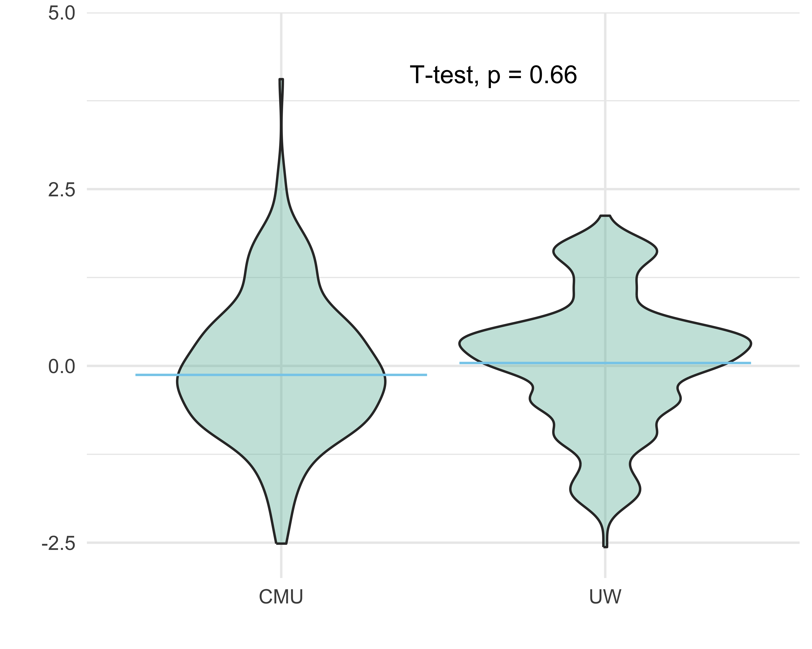
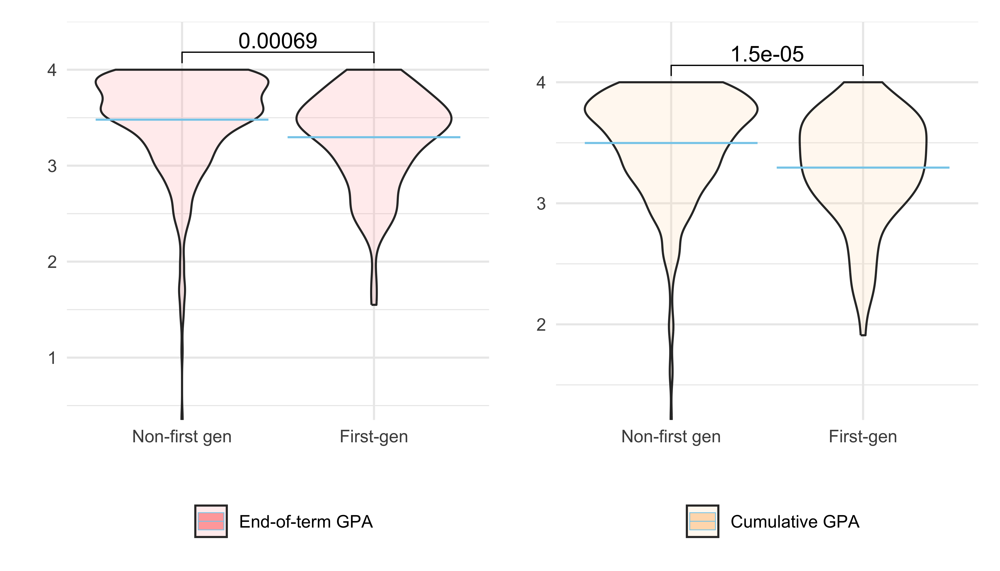
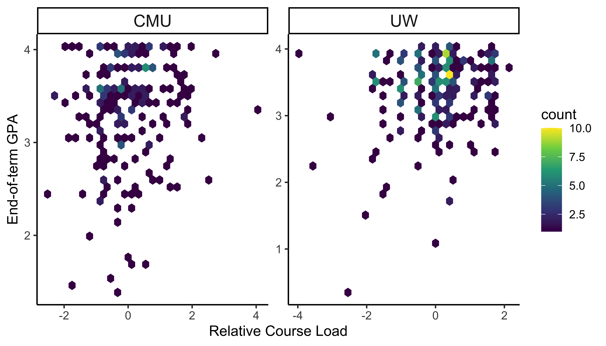

Demographics: Exploratory Analysis
This page is designed to get an understanding of the characteristics (demographic and educational) of the 634 students who were included in this dataset.
sleep_df <- read_csv("data/cmu-sleep.csv") |>
janitor::clean_names() |>
mutate(demo_race = case_when(demo_race == 0 ~ "Underrepresented",
demo_race == 1 ~ "Non-underrepresented"),
demo_race = fct_relevel(demo_race, "Non-underrepresented"),
demo_gender = case_when(demo_gender == 0 ~ "Male",
demo_gender == 1 ~ "Female"),
demo_gender = fct_relevel(demo_gender, "Male"),
demo_firstgen = case_when(demo_firstgen == "0" ~ "Non-first gen",
demo_firstgen == "1" ~ "First-gen",
TRUE ~ NA),
demo_firstgen = fct_relevel(demo_firstgen, "Non-first gen"),
time_collection = case_when(cohort == "lac1" ~ "Spring, 2018",
cohort == "lac2" ~ "Spring, 2017",
cohort == "nh" ~ "Spring, 2016",
cohort == "uw1" ~ "Spring, 2018",
cohort == "uw2" ~ "Spring, 2019"),
university = case_when(cohort == "lac1" ~ "CMU",
cohort == "lac2" ~ "CMU",
cohort == "nh" ~ "NDU",
cohort == "uw1" ~ "UW",
cohort == "uw2" ~ "UW"))Demographic and Academic Information
The dataset consists of first-year students from three different kind universities: Carnegie Mellon (CMU) is a STEM-focused private university, University of Washington (UW) is a large public university and Notre Dame (NDU) is a private catholic university. Each university have students roughly 15-20% students with underrepresented racial identity. However, the male to female ratio, and proportion of first generation students vary between the universities.
sleep_df <- sleep_df |>
rename(`Cohort` =`cohort`,
`University` =`university`,
`Race` =`demo_race`,
`Gender` =`demo_gender`,
`First-Generation` =`demo_firstgen`,
`Relative Course Load`= `zterm_units_zof_z`,
`End-of-term GPA` = `term_gpa`,
`Cumulative GPA` = `cum_gpa`)
#write_csv(sleep_df, "data/cleaned_cmu_sleep.csv")
summary_tbl <- sleep_df |>
select(`University`, `Race`, `Gender`, `First-Generation`, time_collection,
`Relative Course Load`, `End-of-term GPA`, `Cumulative GPA`) |>
tbl_summary(
by = `University`,
statistic = list(
all_continuous() ~ "{median} ({p25}, {p75})",
all_categorical() ~ "{n} / {N} ({p}%)"),
label = list(
time_collection ~ "Time")) |>
add_overall() |>
modify_spanning_header(c("stat_1", "stat_2", "stat_3") ~ "**University**") |>
bold_labels() |>
italicize_labels() |>
add_p()
as_kable_extra(summary_tbl) |>
kable_minimal()| Characteristic |
Overall N = 634 |
CMU N = 208 |
NDU N = 147 |
UW N = 279 |
p-value |
|---|---|---|---|---|---|
| Race | |||||
| Non-underrepresented | 514 / 633 (81%) | 177 / 208 (85%) | 116 / 146 (79%) | 221 / 279 (79%) | |
| Underrepresented | 119 / 633 (19%) | 31 / 208 (15%) | 30 / 146 (21%) | 58 / 279 (21%) | |
| Unknown | 1 | 0 | 1 | 0 | |
| Gender | |||||
| Male | 263 / 631 (42%) | 82 / 206 (40%) | 76 / 147 (52%) | 105 / 278 (38%) | |
| Female | 368 / 631 (58%) | 124 / 206 (60%) | 71 / 147 (48%) | 173 / 278 (62%) | |
| Unknown | 3 | 2 | 0 | 1 | |
| First-Generation | |||||
| Non-first gen | 526 / 629 (84%) | 190 / 208 (91%) | 138 / 146 (95%) | 198 / 275 (72%) | |
| First-gen | 103 / 629 (16%) | 18 / 208 (8.7%) | 8 / 146 (5.5%) | 77 / 275 (28%) | |
| Unknown | 5 | 0 | 1 | 4 | |
| Time | |||||
| Spring, 2016 | 147 / 634 (23%) | 0 / 208 (0%) | 147 / 147 (100%) | 0 / 279 (0%) | |
| Spring, 2017 | 77 / 634 (12%) | 77 / 208 (37%) | 0 / 147 (0%) | 0 / 279 (0%) | |
| Spring, 2018 | 271 / 634 (43%) | 131 / 208 (63%) | 0 / 147 (0%) | 140 / 279 (50%) | |
| Spring, 2019 | 139 / 634 (22%) | 0 / 208 (0%) | 0 / 147 (0%) | 139 / 279 (50%) | |
| Relative Course Load | 0.04 (-0.60, 0.56) | -0.13 (-0.75, 0.56) | NA (NA, NA) | 0.04 (-0.50, 0.37) | |
| Unknown | 147 | 0 | 147 | 0 | |
| End-of-term GPA | 3.56 (3.23, 3.81) | 3.49 (3.06, 3.78) | 3.71 (3.56, 3.89) | 3.50 (3.17, 3.79) | |
| Cumulative GPA | 3.56 (3.23, 3.79) | 3.51 (3.11, 3.79) | 3.71 (3.44, 3.83) | 3.49 (3.17, 3.73) | |
| 1 n / N (%); Median (Q1, Q3) |
Relative Course Load
The Median relative course load is near 0, meaning they have average
course load. To compare relative course load
(zterm_units_zof_z) between different groups of each
demographics, we ran t-test (with/without equal variance). See Appendix A to learn about how we
identified an appropriate two-sample mean test.
Course load in different genders, races, first generation groups and universities do not differ significantly. This suggests that we can directly compare difference in GPAs between categories of each demographics.
plot_courseload <- function(demo, var_equal) {
sleep_df |>
drop_na(rlang::sym(demo), `Relative Course Load`) |>
ggplot(aes(x = get(demo), y = `Relative Course Load`)) +
geom_violin(alpha = 0.4, fill = "#70BBAA") +
labs(y = "", x = "", fill = "") +
scale_y_continuous(expand = c(0,0), limits = c(-3, 5)) +
stat_compare_means(method = "t.test", paired = FALSE,
method.args = list(var.equal = var_equal),
label.y = 4,
label.x = 1.5) +
stat_summary(fun = "median", fun.min = "median", color = "skyblue",
fun.max= "median", size= 0.2, geom = "crossbar")
}Race
demo_name = "Race"
comp <- list(c("Underrepresented", "Non-underrepresented"))
plot_courseload(demo_name, TRUE)Gender
demo_name = "Gender"
comp <- list(c("Male", "Female"))
plot_courseload(demo = demo_name, TRUE)First-Generation
demo_name = "First-Generation"
comp <- list(c("Non-first gen", "First-gen"))
plot_courseload(demo = demo_name, TRUE)University
demo_name = "University"
plot_courseload(demo = demo_name, TRUE) Observations from NDU do not have information related to term unit load.
Grade Point Average (GPA)
The term and cumulative GPAs’ distribution are both negatively-skewed. Median GPAs are between 3 to 4, variable within this range for different groups. We ran t-test (with/without equal variance, see Appendix A) to compare mean GPA between different categories. In general, students from underrepresented race have less GPA compared to students who are not underrepresented. Similarly, first generations have lower GPA than first-year students who are not first generation. Men and women have similar mean GPA. Between the three universities, students from NDU have higher mean GPA when CMU and UW students.
plot_gpa <- function(demo, gpa, var_equal, comp) {
subset_df <- sleep_df |>
drop_na(rlang::sym(demo), rlang::sym(gpa))
max_y <- max(subset_df[,gpa], na.rm = TRUE)
y_positions <- seq(max_y, by = 0.5, length.out = length(comp))
cols <- c("End-of-term GPA" = "#ffaaaa",
"Cumulative GPA" = "#ffddba")
subset_df |>
ggplot(aes(x = get(demo), y = get(gpa), fill = gpa)) +
geom_violin(alpha = 0.2) +
labs(y = "", x = "", fill = "") +
scale_y_continuous(expand = c(0,0), limits = c(min(subset_df[,gpa]), max(y_positions) + 0.5)) +
#facet_wrap(~academic_info, ncol = 3, scales = "free") +
theme(panel.spacing = unit(1, "lines")) +
scale_fill_manual(values = cols) +
stat_compare_means(aes(label = paste0("p = ", p.format)), method = "t.test",
paired = FALSE, comparisons = comp,
method.args = list(var.equal = var_equal),
p.adjust.method = "bonferroni",
label.y = y_positions) +
stat_summary(fun = "median", fun.min = "median", color = "skyblue",
fun.max= "median", size= 0.2, geom = "crossbar")
}Race
demo_name = "Race"
comp = list(c("Underrepresented", "Non-underrepresented"))
plot_gpa(demo = demo_name, "End-of-term GPA", FALSE, comp) +
plot_gpa(demo = demo_name, "Cumulative GPA", FALSE, comp)
Gender
demo_name = "Gender"
comp <- list(c("Male", "Female"))
plot_gpa(demo = demo_name, "End-of-term GPA", TRUE, comp) +
plot_gpa(demo = demo_name, "Cumulative GPA", TRUE, comp)
First-Generation
demo_name = "First-Generation"
comp <- list(c("Non-first gen", "First-gen"))
plot_gpa(demo = demo_name, "End-of-term GPA", TRUE, comp) +
plot_gpa(demo = demo_name, "Cumulative GPA", TRUE, comp)
University
demo_name = "University"
comp = list(c("CMU", "NDU"), c("NDU", "UW"), c("CMU", "UW"))
plot_gpa(demo = demo_name, "End-of-term GPA", FALSE, comp) +
plot_gpa(demo = demo_name, "Cumulative GPA", FALSE, comp)Course load verus GPA
After accounting for race, gender, first-generation status and
university, we know that course load does not have an effect on term GPA
(See Statistic tab). Thee result also reveals that the
difference in GPA that we have seen between racial groups exists, even
after accounting for combined effect with course load difference. The
GPA difference seen in first-generation students in two sample-mean test
could potentially be due to difference in racial makeup and difference
in the student number in CMU between first-generation and non-first
generation students (See Appendix
B).
plot_loadgpa <- function(demo) {
sleep_df |>
drop_na(rlang::sym(demo), `End-of-term GPA`, `Relative Course Load`) |>
ggplot(aes(y = `End-of-term GPA`, x = `Relative Course Load`)) +
geom_hex() +
labs(y = "End-of-term GPA", x = "Relative Course Load", color = "") +
#geom_smooth(se = FALSE) +
facet_wrap(~get(demo), scales = "free") +
theme_classic2() +
theme(
strip.text = element_text(size = 14),
plot.title = element_text(size = 16, face = "bold", hjust = 0.5))
}Race
demo_name = "Race"
plot_loadgpa(demo = demo_name)Gender
demo_name = "Gender"
plot_loadgpa(demo = demo_name)First-Generation
demo_name = "First-Generation"
plot_loadgpa(demo = demo_name)University
demo_name = "University"
plot_loadgpa(demo = demo_name)
Statistics
lm(`End-of-term GPA` ~ `Relative Course Load`*Race +
`Relative Course Load`*`Gender` +
`Relative Course Load`*`First-Generation` +
`Relative Course Load`*`University`,
data = sleep_df) |>
broom::tidy() |>
mutate(term= str_replace(term, "RaceUnderrepresented", "Race - Underrepresented"),
term= str_replace(term, "GenderFemale", "Gender - Female"),
term= str_replace(term, "`First-Generation`First-gen", "First-gen"),
term= str_replace(term, "UniversityUW", "University - UW")) |>
rename(`SE` = `std.error`) |>
mutate(estimate = round(`estimate`, digits = 3),
`SE` = round(`SE`, digits = 3),
statistic = round(`statistic`, digits = 3)) |>
mutate(`p.value` = signif(`p.value`, digits = 3)) |>
knitr::kable(digits = 170) |>
row_spec(2, background = "darkgrey") |>
kable_minimal()| term | estimate | SE | statistic | p.value |
|---|---|---|---|---|
| (Intercept) | 3.403 | 0.049 | 69.481 | 0.00e+00 |
Relative Course Load
|
0.076 | 0.051 | 1.504 | 1.33e-01 |
| Race - Underrepresented | -0.283 | 0.064 | -4.449 | 1.08e-05 |
| Gender - Female | 0.000 | 0.050 | 0.006 | 9.95e-01 |
| First-gen | -0.093 | 0.063 | -1.466 | 1.43e-01 |
| University - UW | 0.093 | 0.050 | 1.865 | 6.28e-02 |
Relative Course Load:Race - Underrepresented
|
-0.029 | 0.061 | -0.474 | 6.36e-01 |
Relative Course Load:Gender - Female
|
-0.028 | 0.049 | -0.576 | 5.65e-01 |
Relative Course Load:First-gen
|
0.043 | 0.063 | 0.675 | 5.00e-01 |
Relative Course Load:University - UW
|
0.019 | 0.051 | 0.372 | 7.10e-01 |
Improvement in GPA
Utilizing paired t-test, we compared average cumulative GPA before term start and the term GPA in each demographic group. GPA within each group of the demographics did not improve significantly during the semester. We can explore them individually as shown below.
cols <- c("End-of-term GPA" = "#ffaaaa",
"Cumulative GPA" = "#ffddba")
plot_improv <- function(demo, comp) {
subset_df <- sleep_df |>
drop_na(rlang::sym(demo), `End-of-term GPA`, `Cumulative GPA`) |>
pivot_longer(
cols = c(`End-of-term GPA`, `Cumulative GPA`),
names_to = "gpa",
values_to = "unit"
) |>
mutate(demo_gpa = paste(get(demo), gpa, sep = "_"))
max_y <- max(subset_df[,"unit"], na.rm = TRUE)
subset_df |>
ggplot(aes(x = get(demo), fill = gpa, y = unit)) +
geom_boxplot(alpha = 0.5) +
labs(y = "", x = "", fill = "") +
scale_y_continuous(expand = c(0,0), limits = c(min(subset_df[,"unit"]), max_y + 0.5)) +
scale_fill_manual(values = cols) +
stat_compare_means(method = "t.test",
paired = TRUE,
p.adjust.method = "bonferroni",
label.y = max_y)
}Race
demo_name = "Race"
plot_improv(demo = demo_name, comp)Gender
demo_name = "Gender"
plot_improv(demo = demo_name, comp)First-Generation
demo_name = "First-Generation"
plot_improv(demo = demo_name, comp)University
demo_name = "University"
plot_improv(demo = demo_name, comp)
Appendix A: Appropriate Two-Sample Mean Test Identification
Normality Test
ggplot(long_sleep_df, aes(sample = `unit`)) +
stat_qq(size = 0.4, shape = 21) +
stat_qq_line() +
labs(x = "Theoritical Quantiles", y = "Sample Quantiles",
title = "Normal Q-Q Plot") +
facet_wrap(~academic_info, ncol = 3)shapiro_res |>
select(-method) |>
column_to_rownames("academic_info") |>
kable(digits = 25, align = "l", caption = "Shapiro-Wilk Normality Test") |>
kable_minimal()| statistic | p.value | |
|---|---|---|
| Relative Course Load | 0.983 | 1.67e-05 |
| End-of-term GPA | 0.860 | 2.60e-23 |
| Cumulative GPA | 0.901 | 7.40e-20 |
As shown by the QQPlot and the Shapiro-Wilk normality test, the three measures (course load, term GPA and cumulative GPA) do not follow a normal distribution. However, due to Central Limit Theorem, the sample mean will approximate normal distribution with sample size is large (n > 30). In this case, a t-test is still feasible.
Equality in Variance
Given the variables did not follow normal distribution, we used Levene’s test to identify if the variance in observations for the three quantitative measures in each demographic group is equal or not. We tested the following hypothesis:
\(H_o: \sigma_{1}^2 = \sigma_{2}^2 = ... =
\sigma_{k}^2\) where there are k groups in the particular
demographic category.
\(H_a:\) At least 2 \(\sigma_{i}^2\) are unequal
Reduce(rbind, levene_res) |>
select(-statistic) |>
pivot_wider(
names_from = group,
values_from = `p.value`) |>
column_to_rownames("academic_info") |>
kable(digits = 25, align = "l", caption = "Levene's Test For Homogeneity of Variance: P-values") |>
kable_minimal()| University | Race | Gender | First-Generation | |
|---|---|---|---|---|
| Relative Course Load | 7.25e-01 | 0.36800 | 0.544 | 0.363 |
| End-of-term GPA | 1.08e-07 | 0.01570 | 0.583 | 0.636 |
| Cumulative GPA | 3.62e-10 | 0.00219 | 0.154 | 0.492 |
Given the p-values, at 5% significance level, we can assume equal
variance in relative course load between different group in each
demographic category. We assume equal variance for the two GPA measures
for different genders and category for first-generation students. For
the aforementioned groups, we use two sample t-test with equal variance.
For GPA measures between university groups and racial groups, we use two
sample t-test with unequal variance.
Appendix B: First-Gen Demographic Distribution
summary_tbl_first <- sleep_df |>
select(`Race`, `Gender`, `First-Generation`, `University`) |>
tbl_summary(
by = `First-Generation`,
statistic = list(
all_categorical() ~ "{n} / {N} ({p}%)")) |>
add_overall() |>
modify_spanning_header(c("stat_1", "stat_2") ~ "**First-Generation**") |>
bold_labels() |>
italicize_labels() |>
add_p()
as_kable_extra(summary_tbl_first) |>
kable_minimal()| Characteristic |
Overall N = 629 |
Non-first gen N = 526 |
First-gen N = 103 |
p-value |
|---|---|---|---|---|
| Race | ||||
| Non-underrepresented | 510 / 628 (81%) | 441 / 525 (84%) | 69 / 103 (67%) | |
| Underrepresented | 118 / 628 (19%) | 84 / 525 (16%) | 34 / 103 (33%) | |
| Unknown | 1 | 1 | 0 | |
| Gender | ||||
| Male | 261 / 626 (42%) | 216 / 523 (41%) | 45 / 103 (44%) | |
| Female | 365 / 626 (58%) | 307 / 523 (59%) | 58 / 103 (56%) | |
| Unknown | 3 | 3 | 0 | |
| University | ||||
| CMU | 208 / 629 (33%) | 190 / 526 (36%) | 18 / 103 (17%) | |
| NDU | 146 / 629 (23%) | 138 / 526 (26%) | 8 / 103 (7.8%) | |
| UW | 275 / 629 (44%) | 198 / 526 (38%) | 77 / 103 (75%) | |
| 1 n / N (%) |